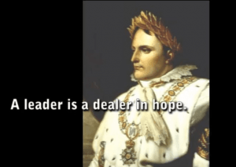

is an aspiring philosopher king, living the dream, travelling the world, hoarding FRNs and ignoring Americunts. He is a European at heart, lover of Latinas, and currently residing in the USA.


On December 2, 1804, Notre Dame Cathedral echoed with the sounds of 400 musicians and singers as 35 year old Napoleon Bonaparte was crowned emperor (crowning himself, incidentally). “I found the crown of France in the gutter, and I picked it up.”
He would go on to conquer almost all of Europe, rule over 70 million people, wield more power than anyone since the ancient Caesars of Rome, and instill legal and social changes that are still evident today. He came to power based on his achievements and ambition alone, as did Adolf Hitler over a century later, and was driven strongly by a desire for glory and conquest, stating “I love power like a musician loves his music.” What lessons can we learn from this titan of history?
Born on the Island of Corsica, Napoleon grew up hating France, as they had invaded and conquered Corsica shortly before his birth. Napoleon held a grudge against his father for submitting to the French, which was the most advanced nation in the world at the time, and while some rebels retreated to the mountains to fight, accepting French rule was the obvious choice. Napoleon credits all his accomplishments with the training his mother gave him, explaining this saying “she has the head of a man on the body of a woman.”
Moving to France in his youth for education, he remained a proud Corsican and somewhat of a loner and outsider. He had little in common with his wealthy French classmates. At 15 he was promoted to the Royal Military Academy in Paris. Teachers described him as proud, ambitious, egotistical, quiet. At 16 he studied with the greatest artillery brigade in the French army.
He struggled with finding himself, and wrote about having thoughts of death and having a lack of purpose. But when the French Revolution came in 1789, and the powerful French monarchy, French nobles, and clergy, were suddenly threatened with losing their power, Napoleon, at age 20, while not a revolutionary, welcomed the revolution as good news. It abolished privileges and hierarchy, and instituted justice and equality for those which had been oppressed for many years. The French Republic was proclaimed in 1792.
At age 23, now an idealistic revolutionary, Napoleon took leave from the army and returned to his Corsican homeland. The former leader of the Corsican rebels, who was now governor of Corsica, met with Bonaparte, and dismissed him as self centered and ambitious, calling him “a big, inexperienced boy.”
Napoleon, a strong believer in the French Revolution, was fully aligned with the new republic, while the governor wished for Corsican independence. Napoleon was defeated and banished from his homeland by the governor. This was a turning point for Bonaparte, who had viewed the governor as a hero.
Exiled, he returned to France with his widowed mother and brothers, finding Maximillian Robespierre in charge, the Revolution turned into The Terror. Austria, Prussia, Spain and Great Britain, completely intolerant of a free republic and deposed king, were all at war with France. The city of Toulon rebelled, opening its port to the British.
Napoleon was despatched to Toulon. He had a strategy for driving out the British. As aristocratic military officers fled the country in droves, the young Napoleon had a huge opportunity to prove himself in battle. He attacked the British, sinking 10 of their ships, and receiving a wound from a bayonet as he charged the fort. Capturing Toulon, Napoleon rose from Captain to Brigadier General in a mere 3 months.
Robespierre, executioner becomes the executed
Robespierre led a brutally merciless regime, saying “liberty cannot be secured unless criminals lose their heads” and thousands of Frenchmen did indeed. Bonaparte was opposed to the Terror, but he despised chaos even more, and wrote a pamphlet endorsing Robespierre. In 1794, Robespierre’s government fell, and a new wave of beheadings, including Robespierre’s, followed.
Napoleon returned to France and began attending court. “The women here are the center of importance. Here alone of all places on earth, they appear to hold the reins of government.” But the women could tell he was not from the aristocratic class, and his clothes and appearance belied this, leading to many of the women rejecting or ignoring him. He again became depressed, writing to his brother that if things didn’t change, the next time a horse carriage came barreling down the street, he would refrain from stepping out of the way.
In 1795, a Parisian mob assembled to restore the monarchy. Bonaparte was put in charge of the defense of Paris, and using a tactic never before attempted on citizens–he attacked the mobs with cannons, obliterating them. He was promoted to general at the age of 26.
Grapeshot to the face will stop a protest
He met Josephine, a creole aristocrat from the French colony of Martinique, and a 32 year old widow with 2 children and lots of debt. Her husband had been guillotined, and she had been known to have had multiple affairs with men in French society.
She was a woman of influence, and well connected. Napoleon fell in love with her, but she was not attracted to him. She told a friend he was too young, too skinny, too serious, and when he proposed she hesitated. Recognizing that her looks were fading and her debts mounting, she finally accepted his proposal.
Older, single mom, debt-ridden, scandalous past–what could go wrong?
Napoleon’s first assignment as general and commander of all French forces in Italy, he was charged with defeating the Austrian forces. The French troops had struggled for two years in the Alps without progress. The French generals expected little from him, ridiculing and laughing at him, but upon his arrival in Italy, they immediately revised their opinions. One general stated “I don’t know why, but the little bastard scares me.”
He inspired the troops, promising them victory and riches. In his first battle against the Austrians and Piedmontese, who greatly outnumbered him, he divided and destroyed their armies. He could mobilize and control the battlefield before the enemy had time to react. “They sent a young madman, who attacks right, left, and to the rear. It’s an intolerable way of making war,” wrote one of the Piedmont generals. Napoleon soon accepted their surrender, and demanded gold to reward his troops.
Away from his wife, and still in his 20s, Bonaparte wrote daily to Josephine. Bonaparte did not have much experience yet with women, and had yet to learn their ways.
Not a day goes by without my loving you. Not a night without holding you in my arms. I curse the glory and ambition which keeps me from the soul of my life. Whenever I am troubled as to how things will turn out, I put my hand to my heart where throbs your likeness. I have but to look at it, and my love is perfect happiness.
Josephine would often laugh and read his letters aloud to her friends, saying “Bonaparte is so amusing!” My, how little women have changed. Josephine would go on to cause him great heartache and wasted time and resources. And Bonaparte would go on to achieve even greater victory and glory. Some observations on Napoleon:
A hard lesson Bonaparte won’t learn for years to come
He believed order must serve ideals. Robespierre and Napoleon agreed on this, feeling it is necessary to suspend liberties to preserve liberties during the Reign of Terror.
Be bold, be unpredictable, always surprise your enemy. Do not play by the rules.
Napoleon attacks every day. He attacks when it snows, he attacks at night, he attacks when it’s cold. It’s not the way the game is played. He looks for the enemy, fights it, and when they assume he will stop, he continues. And the next day he fights again. It surprises them. – Jacques Garnier, historian.

Napoleon was a master at motivating his soldiers, and the more they won, the harder they were to stop. Garnier:
There are no tactics at all. The troops come in so enthusiastically and quickly it surprises the enemy. It’s just a question of enthusiasm. Everyone throws themselves into it. Everyone risks death.
Napoleon often took physical risks, and never showed fear. He would fight amongst his men, load cannons, lead charges, and won the respect and devotion of his men. He learned to impose his will on his own side and the enemy both. General Bonaparte earned the nickname “Our Little Corporal” because he took on the duties of a lower ranked corporal while commanding his troops. To be continued…
Read More: 5 Reasons Why Classical Opera Should Be Your New Masculine Hobby
{kind=link}
{kind=link}
{kind=link}
{kind=link}
{kind=link}
{kind=link}
{kind=link}
{kind=link}
{kind=link}